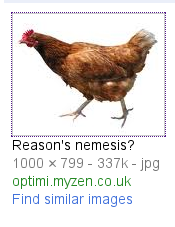

Tuesday, June the 15th, 2010
back to: title, date or indexes
“Clicking the link would have been a letdown” noted Glyn Webster in the email to which he attached this screenshot:

He may be right, and life is too short to follow up every damned link thrown at us by Google. But I confess I am very intrigued. In a world of fluffyheads, pseudoscientists, conspiracy theorists, theocratic nutters and whatnot, who would have thought that the greatest and most dangerous enemy of Reason is poultry? This calls for proper investigation, before the majestic achievements of the Enlightenment are brought crashing to the ground by vengeful and unreasonable hens. Fear not—Mr Key is on the case!
I suppose one can take a crumb of comfort from the doubt implicit in the question mark appended to the caption. Nevertheless, until I am able to bring you further revelations, keep a beady eye on any poultry you come across. Meanwhile, I shall begin by looking up what Diderot had to say about hens, to discover if he had any inklings of the threat.
UPDATE : Hmm, this could prove significant. In D'Alembert's Dream (1769), Diderot has Bordeu say this : “But here's a strange fact which countless educated people will tell you is true but which is false, namely, that in the poultry yard of the archduke they've seen a disgusting rabbit who used to act as a cock and service around twenty shameless hens who were happy with the arrangement. The people will add that they have been shown some chickens covered with fur which were the products of this bestiality. You can be sure they were ridiculed.”
Clearly my next step must be to conduct a rigorous survey of the poultry yards of archdukes.